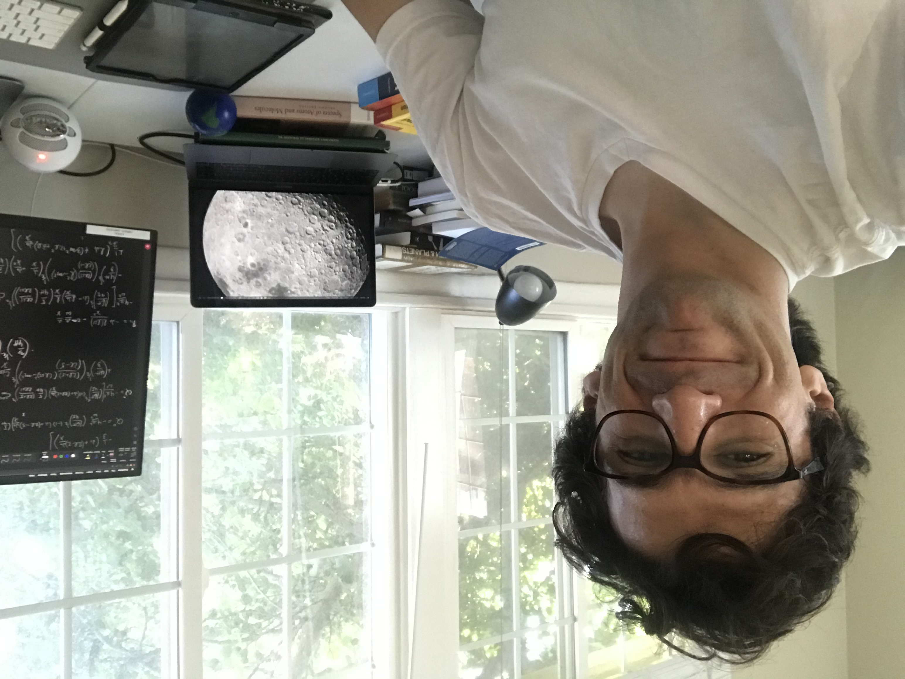

Welcome
Hi! I am a PhD candidate in Planetary Geophysics at Caltech. My scientific interests involve geophysical phenomena across the solar system. Most of my doctoral work examines the interior structure of Jupiter from gravity field observations obtained by NASA's Juno mission. A small part of my doctoral work advances our understanding of the mechanics and source properties of earthquakes. I am originally from Chile, a land of powerful telescopes and large earthquakes.

Ph.D. Planetary Science, Caltech 2022 (expected)
M.S. Geophysics, Caltech 2019
M.S.E. Earthquake Engineering, Universidad de Chile 2016
B.S.E. Civil Engineering, Universidad de Chile 2013
research
Dynamical tides in Jupiter
In the absence of seismological constraints, in-situ gravity field observations from orbiting spacecraft become the following alternative to resolve the interior structure of a gas giant planet. In a pioneering work with my doctoral advisor David Stevenson, we examined the dynamical tides of Jupiter in the context of Juno observations of Jupiter's tidal response employing a combination of simple models, perturbation theory, and pseudo-spectral numerical methods (Idini and Stevenson, 2021). Our theoretical results interpret Juno observations as the first direct detection of dynamical tides in a gas giant planet.
Jupiter's South pole as revealed by Juno (NASA/JPL-Caltech/SwRI/MSSS).
Earthquake and fault mechanics
The nucleation, propagation, and arrest of earthquakes constitute a fundamental problem in geophysics with societal practical implications. Motivated by seismological observations of rock damage near fault zones, I expanded a spectral boundary integral method (Luo+, 2017) to model earthquake cycles in an elastic medium that accounts for the damaged rock that surrounds fault zones. In collaboration with Jean-Paul Ampuero, our work identified a new mechanism to earthquake pulses, a common rupture propagation mode observed during destructive earthquakes (Idini and Ampuero, 2020).
Earthquake source observations
As an undergraduate at Universidad de Chile, I developed a statistical model to estimate the ground motion produced during destructive earthquakes in Chile (Idini+, 2017)---the region in the world with the largest earthquake registered in history. Our statistical model is routinely applied to seismic hazard studies in the area. As a doctoral student, I worked with Caltech's Professor Mark Simons in a fault slip Bayesian model of the 2019 Ridgecrest earthquake derived from spaceborne radar maps of surface deformation and a Monte Carlo Markov Chain sampling algorithm (Ross+, 2019). Our model has become a prime reference to the characterization of this large earthquake that ended ~20 yr of seismic quiescence in California.
Valdivia residents explore a crack caused by the 1960 Chile earthquake (STF/AFP/Getty).
publications
(10) Idini, B. & Stevenson D.J. (in prep). Constraints on Jupiter’s extended dilute core from high–degree tidal gravity.
(9) Idini, B., Ruiz, S., Ampuero., J-P., Rivera, E, & Leyton, F. (in prep). High-frequency strong ground motion along the plate
boundary in Northern Chile.
(8) Idini, B. & Stevenson D.J. (2021). Dynamical tides in Jupiter as revealed by Juno, The Planetary Science Journal.
(7) Erickson, B., Jiang, J., et al., including Idini, B. (2020). The community code verification exercise for simulating sequences of earthquakes and aseismic slip (SEAS), Seismological Research Letters
(6) Idini, B. & Ampuero J.-P. (2020). Fault-zone damage promotes pulse-like rupture and back-propagating fronts via quasi-static effects, Geophysical Research Letters.
(5) Ross, Z., Idini, B., Jia, Z., et al. (2019). Hierarchical interlocked orthogonal faulting in the 2019 Ridgecrest earthquake sequence, Science.
(4) Gurnis, M., et al., including Idini, B. (2019). Incipient subduction at the contact with stretched continental crust: The Puysegur Trench, Earth and Planetary Science Letters
(3) Leyton, F., Pastén, C., Ruiz, S., Idini, B., & Rojas, F. (2018). Empirical site classification of CSN network using strong‐motion records. Seismological Research Letters.
(2) Luo, Y., Ampuero, J. P., Galvez, P., Van den Ende, M., & Idini, B. (2017). QDYN: a Quasi-DYNamic earthquake simulator (v1. 1). Zenodo. (GitHub)
(1) Idini, B., Rojas, F., Ruiz, S., & Pastén C. (2017). Ground motion prediction equations for the Chilean subduction zone, Bulletin of Earthquake Engineering.